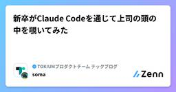
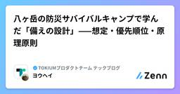

TOKIUMプロダクトチーム テックブログのフィード
https://zenn.dev/p/tokium_dev
『未来へつながる時を生む』 株式会社TOKIUMの技術ブログです🕰
フィード

新卒がClaude Codeを通じて上司の頭の中を覗いてみた 1
1
TOKIUMプロダクトチーム テックブログのフィード
こんにちは！株式会社TOKIUMでエンジニアをしているsomaです！私は部署に配属されて4ヶ月になります。正直に言うと、上司が何を考えて仕事をしているのか、まだよくわかりません。まあ、何年も一緒に働けば、だんだんわかるようになるのだろうと思っていました。ところが先日、それが30分で覗けてしまう出来事がありました。それは部署内で始まった「skills共有会」です。 「skills共有会」とは？「skills共有会」と聞くと、Claude CodeのSkillsを共有する会っぽいですよね。でも実際は、Skillsだけの会ではありません。そもそもClaude Code自体に対する...
2日前

タイムボクシングのすすめ 38
TOKIUMプロダクトチーム テックブログのフィード
株式会社TOKIUMでエンジニアをしているあのです。今年の3月から、開発チームのリーダーとして業務しています。私のチームは、会計ソフトへ連携するためのフォーマットをお客様ごとにカスタマイズしています。そのため他の開発チームに比べて、「この仕様は実装できるか」「今はどういう実装になっているか」といった相談や確認が、チームの外から入ってきやすい立ち位置にあります。リーダーになってからというもの、自分の1日の過ごし方が変わりました。自分で手を動かす時間よりも、レビュー、相談、確認の依頼がどんどん入ってきます。会議も増えました。気づくと一日が終わっていて、自分が進めるはずだった仕事は何も...
4日前

八ヶ岳の防災サバイバルキャンプで学んだ「備えの設計」——想定・優先順位・原理原則
TOKIUMプロダクトチーム テックブログのフィード
首都直下地震や南海トラフ地震が、遠くない将来やって来ると言われ続けています。みなさんは、災害への備えをしていますか？私は、まあまあ備えができているつもりでいました。防災バッグは家にあるし、水も何本かある。でも 「そのバッグの中身、全部使えますか？」 と聞かれたら、答えに詰まります。そもそも中身を最後に確かめたのがいつだったかも、思い出せませんでした。「命の72時間」という言葉をご存知でしょうか。発災から72時間を過ぎると、救出される人の生存率が急激に下がる。だから大きな地震のあとの数日間、救助と支援は、生き埋めや重傷など命の危険がある人に集中します。自力で行動できる人への救援は、後回...
5日前
開発未経験のPMが、Claudeとデータ基盤の障害対応をした話
TOKIUMプロダクトチーム テックブログのフィード
こんにちは。TOKIUM でプロダクトマネージャーをしている譽田です。社内データ分析基盤の構築プロジェクトを、立ち上げから担当しています。いきなりですが、このたび、データ基盤のパイプラインの開発・運用を、私が自分の手で担っていくことになりました！そして私は、パイプラインを作り切ったことがありません。非常にやばいアツいですね。 データ基盤と私の1年半TOKIUM の社内データ分析基盤は、2025年1月にほぼゼロから構築を始めました。やりたいことはシンプルです。自社プロダクトの DB や HubSpot などの SaaS データを BigQuery に集約し、タイムリーにデータ...
5日前

Claude Codeにいい感じにタスクを実行させたい！ — 積む・任せる・直すの3スキル
TOKIUMプロダクトチーム テックブログのフィード
突然ですが、皆様こう思いませんか？Claude Codeにいい感じにタスクを処理しておいてほしい！！！！毎日毎日、出勤から退勤までClaude Codeと向き合うものとして、同意してくれる人も多いはず。ただ、いい感じに実行させようとすると、自分の場合は2つの課題にぶつかりました。課題A：スキルが多くなりすぎて、管理しきれなくなった。最初はスキルファーストの考えを取り入れ、やりたいことに対してスキルをどんどん作っていきました。しばらくはうまく回ったのですが、数が増えるにつれて、どのタスクのときにどのスキルを使うのか自分でも覚えていられない。何なら似たようなスキルが複数ある、という...
11日前
犯人は73件の野良SIDでも、バージョンでもなかった ── Codex CLIを間欠的に殺していた真犯人を追い詰めた話
TOKIUMプロダクトチーム テックブログのフィード
!この記事は何の話か（3行まとめ）（事件）Codex CLI（codex exec）が Windows 環境で、何の前触れもなく間欠的に即死するようになりました。並走していようがいまいがお構いなし。仕様書を1行も読まないうちに死ぬので手の打ちようがありませんでした（捜査）「ACLの野良SID」「バージョンの不具合」という如何にもそれっぽい容疑者を2人取り調べましたが、どちらもシロでした。最終的に真犯人は、サンドボックスの権限を保持しているだけの地味なJSONファイル1個でした（逮捕後の処置）犯人を突き止めただけでは終わらせず、壊れたファイルを検知して救出範囲だけ直す仕組みを実装...
13日前
要望を断る側から、受ける側になった──元PdMのFDEの悩み
TOKIUMプロダクトチーム テックブログのフィード
第一部で、受託開発出身の私がTOKIUMでFDE（Forward Deployed Engineer）になり、「目の前の一社」と「その他の全顧客」の板挟みになっている話を書きました。https://zenn.dev/mura_massann/articles/sier-to-saas-fde今回はその続きで、板挟みのもう一段深い層の話です。いま導入しているこのプロダクト、私が管轄する部署のプロダクトなんです。自分でこのプロダクトのPdMをやっていたわけではないのですが、PdMたちの隣で、どの要望を受けてどの要望を断るかという判断に長く関わってきました。断る側の内側にいた人間が、今度は...
16日前
受託の常識は、SaaSのFDEに通用しなかった
TOKIUMプロダクトチーム テックブログのフィード
いま、ある大手企業グループの導入案件にFDE（Forward Deployed Engineer）として入っています。FDEはPalantirが広めた職種名で、顧客の現場に入り込み、プロダクトと顧客業務の隙間を埋めるエンジニアのことです。プロダクトをそのまま渡しても、大企業の業務にはぴったりはまりません。承認の経路、規程との突き合わせ、既存システムとの連携。そういう「あと一歩」を、顧客のすぐそばで手を動かして埋める役割だと思ってもらえれば、だいたい合っています。ただ、これだけだと、導入コンサルと何が違うのかと思われるかもしれません。私は、一社のために解いたものを、次の会社でも使える形...
17日前
「深く考えて」は、なぜAIに効かないのか
TOKIUMプロダクトチーム テックブログのフィード
前回、50年以上未解決だった数学の問題「サイクル二重被覆予想」がAIに解かれたらしい、という話を書きました。解き方の型は1945年からほとんど変わっておらず、型になったものはAIに渡っていく。だから人間側の重心は、問いを立てる側に移る、という話です。https://zenn.dev/mura_massann/articles/how-to-pose-questionsその後、この証明に使われたプロンプトの全文が、OpenAIから公開されました。https://cdn.openai.com/pdf/04d1d1e4-bc75-476a-97cf-49055cd98d31/cdc_pr...
18日前
いかにして問いを立てるか──未解決問題までAIが解く時代のPdM
TOKIUMプロダクトチーム テックブログのフィード
また数学の未解決問題が、AIに解かれたらしいです。ある朝、社内のSlackにそんな話題が流れてきました。新しいモデルが出るたびに誰かが「また解けたらしいですよ」と持ってくる、ちょっとした風物詩になりつつあります。ただ今回は少し事情が違いました。証明の中身をよく読むと、私が大学院時代に研究していた領域と、かなり近い。点と線のつながりを扱う、グラフ理論という数学の一分野です。数学科でこれを専攻して修士をとっているので、数少ないグラフ理論の専門家と言っても過言ではありません。と言うと、先生方に怒られる気もしますが。「AIが解けないグラフ理論・離散数学の問題は、ほぼなくなったと思いますね」と、...
19日前
「危ないものは全部 block」をやめた ── AI のガードを warn で測ってから格上げする話
TOKIUMプロダクトチーム テックブログのフィード
!この記事は何の話か（3 行まとめ）AI（Claude）の暴走を止めるガード（Hook）は、増やすほど安全になりそうですが、実際は誤検知で正当な操作まで止まり、ガードそのものが邪魔者になって、いずれ無効化されかねませんそこで新しいガードは原則 warn（止めずに知らせるだけ）から始め、しばらく動かして「誤検知（FP）」と「見逃し（FN）」を測ってから、block（実行を止める）へ格上げすべきかを判断することにしました実際に測ってみると、格上げに値したのは3件、6件は warn のまま据え置き、2件は「確実には任せきれない」と正直に格下げ・見送りにし、残り1件は昇格→検証で差し戻...
22日前
【ハーネス】「依存方向ゲート」でアーキテクチャの退行をCIで止める
TOKIUMプロダクトチーム テックブログのフィード
はじめにハーネスエンジニアリング、熱いですよね。この記事では、ハーネスの一つとして私たちのチームが最近追加したレイヤ依存方向ゲートを紹介します。「どの層がどの層を import してよいか」を機械判定し、違反があれば CI を FAIL させる仕組みです。入れてみたら、人間レビューで守ってきたはずの違反が 8 件も見つかりました。あなたのリポジトリにもきっと眠っています。 依存方向ゲートの必要性AI は、レイヤの依存方向をあまり考えてくれません（私だけかもですが）。放っておくと、usecase が infrastructure 層のクラスを平気で import してきます...
24日前
要件を書くPdMこそ、QAで手を動かしてみませんか
TOKIUMプロダクトチーム テックブログのフィード
はじめに — QAがひっ迫して、PdMの自分がQAをやることになったこんにちは、TOKIUMでPdMとして働いている冨永です。弊社では1つのQAチームで複数の開発チームのQAを担当しています。そのため、リリースタイミングが被ると、どうしてもQAがひっ迫し、優先順位をつけざるを得ない場合があります。先日もそういった場面がありました。ただ、どうしても早く出したい機能が含まれていたため、要件は一番把握しているし、ということで、PdMの私もQAに参加し、テストケースのチェックをすることになりました。（もちろん私ひとりではありません。QAの方々がメインで、私はできるテストをやります。品質...
25日前
調査用スキルを作ってみた
TOKIUMプロダクトチーム テックブログのフィード
はじめにTOKIUMでSWEとして働いている@lpvnvsbtfです。ソフトウェアエンジニアとして働いていますが、エージェント開発を進めるにあたって、その技術の進歩の速さから論文からも得られる栄養素が不可欠なのではないかと思いこのスキルを作ってみました。調べていて困るのは、情報源が媒体ごとにバラバラなことです。arXiv の論文、ベンダーの公式発表、公式ドキュメント、サードパーティの解説ブログ、ベンチマークを作った会社の発表と、あちこちに散っています。調査させるエージェントがいると、この辺も簡単にこなしてくれます。そこで、収集からノート化までの手順、一次情報と二次情報の裏取り...
1ヶ月前
ソースコードで理解する OpenTelemetry Go の TracerProvider
TOKIUMプロダクトチーム テックブログのフィード
はじめにこんにちは、Lapi（@dragoneena12）です。私たちのチームではGoを使ったAIエージェント開発をしているのですが、その監視のためにOpenTelemetryによる計装を行いました。OpenTelemetryではAIエージェントのための計装仕様として、Semantic Conventions for GenAI agent and framework spans というものが定められています。Datadog Agent Observability はこの仕様に対応しており、適切に計装すればDatadog上でAIエージェントの動作をわかりやすく見ることができます...
1ヶ月前
AI時代の新人IT人材に送る「言語化」のススメ
TOKIUMプロダクトチーム テックブログのフィード
はじめにこんにちは、TOKIUMの重村です。25卒として入社した後、新卒未経験でエンジニアになり、現在は「TOKIUM AI出張手配」のPdMをしています。入社からの1年あまりで、エンジニアとしてAIとペアでコードを書く仕事も、PdMとして要件定義や顧客ヒアリングをする仕事も、開発工程の上流から下流までを一気通貫で経験しました。（時にはAI出張手配を売り込みに営業なんかもやりました）行う仕事や立場が変わっても、共通して「これが一番大事だった」と言えるものが1つだけあります。それが「言語化」です。この記事では、AI時代の新人IT人材に向けて、言語化の重要性に気づくまでの失敗と、...
1ヶ月前
サバゲー動画をvideo-useで編集したらデスモンタージュができたので、自分でハイライト作成スキルを書いた話
TOKIUMプロダクトチーム テックブログのフィード
こんにちは、TOKIUMでエンジニアをしているFatherScorpionです。突然の布教になりますが、サバゲーはいいぞ。v6 完成版より、7試合目の前進シーン サバゲーはいいぞ、上映会もいいぞサバゲーはリアル版FPS（撃ち合い）ゲームとも言われるスリリングで楽しいスポーツです。週末には100人近くが集まり熱い撃ち合いを繰り広げる、それでいて被弾は自己申告の紳士なスポーツです[1]。自分はサバゲーで遊ぶときにGoProを頭に付けて録画をしています。これは特にSNSで共有したりするわけではなく、自分の周りでサバゲー友達同士の上映会を行う文化があるからです。例えば一緒に行動し...
1ヶ月前
並走する複数のClaudeが二重実行・取りこぼしを起こす ── 指揮者なしの台帳で衝突を防いだ17日間
TOKIUMプロダクトチーム テックブログのフィード
!この記事は何の話か（3 行まとめ）AI（Claude Code）を1台ではなく何台も同時に走らせると、各セッションがバラバラにタスクを抱え、何が終わって何が残っているか分からなくなり、同じ作業を二重にやってしまいますそこで「未処理タスクの唯一の正本（SSoT）」を1本の追記専用ファイル（台帳）に集約し、別ウィンドウのAIへ仕事を撒いて回す自作の仕組み Foreman を作りました。中央サーバもロックも使わず、ファイルだけで並走を成立させています台帳を集計したら、342件のタスクを追跡して289件（完了率およそ85%）を完了、そのうち全体の約75%（256件）は、起点とは別のウ...
1ヶ月前
ポストモーテムはSkillに作らせよう
TOKIUMプロダクトチーム テックブログのフィード
はじめにこんにちは、最近ClaudeのSkillを作るのにハマっているLapi（@dragoneena12）です。最近チームでポストモーテム作成用のSkillを作ってみたのですが、結構いい感じに作れてチーム内での評判も良かったので、こちらで紹介してみたいと思います。 ポストモーテムとはポストモーテムとはGoogleのSite Reliability Engineeringで提唱されている、インシデントについての事後分析レポートです。インシデントの影響や原因、再発防止策などをまとめた文書を作成し組織全体に共有することで、知識の蓄積を図り、効果的な予防措置をとることを目的とし...
1ヶ月前
要件定義のレビュースキルの育成をはじめました
TOKIUMプロダクトチーム テックブログのフィード
はじめにClaude Skillsで様々なスキルを作成して生産性を向上させている方は多いと思います。私もこれまでに色々なスキルを作成してきましたが、今回は下記理由があり、要件定義のレビューのためのスキルの育成をはじめました。最近、配下のエンジニアメンバーが作成した要件定義のレビューの機会が増えてきており、今後も増えそうである。自身のこれまでのエンジニアとしての経験において言語化できていない領域であったのでちょうど良い機会だと思った。「自動化して効率化を図る」ということに加えて、自分の頭の中にあるレビューの判断基準を、AI と一緒に言語化して育てていく取り組みです。 ...
1ヶ月前